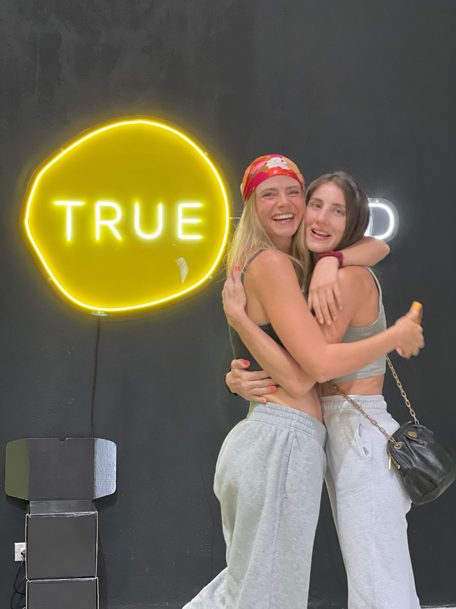

Nuestra historia
Somos Lore y Andre, dos amigas unidas por el amor a la comida deliciosa y un estilo de vida saludable. Nuestra aventura comenzó en Costa Rica, donde la vida nos reunió y nos llevó a crear True Food.
Todo empezó con Santi, el hijo menor de Andre, quien fue diagnosticado con múltiples alergias alimentarias. Este desafío nos abrió los ojos a la poderosa conexión entre la comida y la salud. Nos asustó, sí, pero también nos motivó a dar el salto hacia un estilo de vida más saludable, uno que siempre habíamos querido pero temíamos por los «sacrificios» que implicaba.
Hoy, True Food es más que una marca. Es una comunidad de personas que, como nosotras, creen que se puede comer delicioso, saludable y sin gluten.
- Fundado por mujeres
- Hecho en Costa Rica